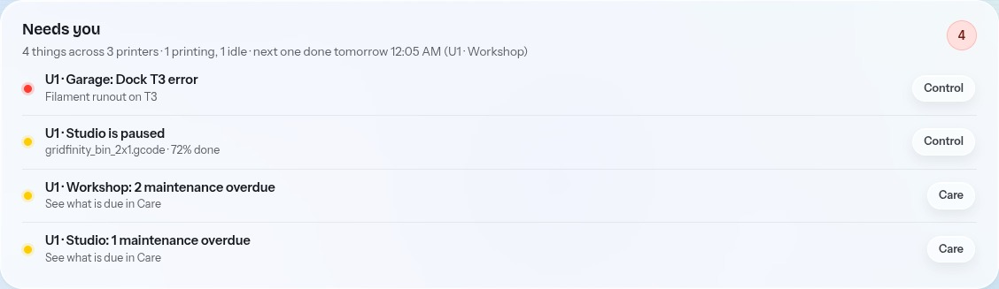

Deja Vu1
Free · open source · for Snapmaker U1
One screen for every U1 you run.
See what needs you.
Prepare a plate.
Check before you start.
Software model · estimated geometry

github.com/Jbyjre/Deja_VU1
MIT licence · runs on your computer
Simulated farm · physical U1 testing pending
 Software model · estimated geometrySoftware model · estimated geometry
Software model · estimated geometrySoftware model · estimated geometry